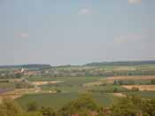
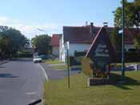
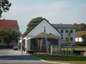
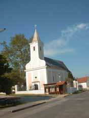
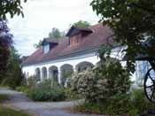

|
|
|
 Blick auf Bildein  Willkommen in Bildein  Museum Bildein  Kirche Bildein |
Bildein ist eine malerische kleine Ortschaft im Burgenland von Österreich, nahe an der ungarischen Grenze. Man nennt diese Gegend auch die Weinidylle. Nicht - wie jemand einmal scherzhaft meinte, weil die Idylle dort zum weinen ist, sondern weil es zur Idylle noch schönen herzhaften Wein gibt. Bildein hat ein hervorragendes Heimatmuseum, dass die wechselvolle Geschichte der näheren Umgebung anschaulich aufzeigt.
 Florianigasse 27
|